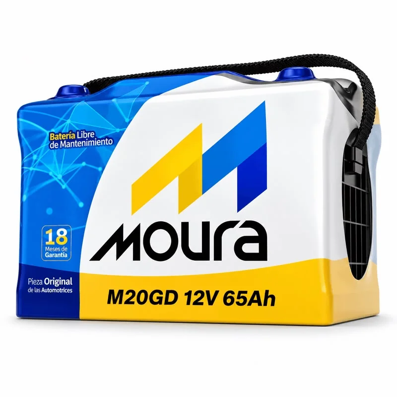
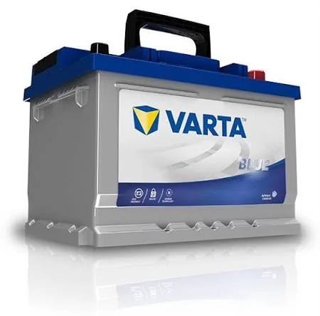

NUESTROS PRODUCTOS
Baterías para tu vehículo.
Explorá algunas referencias de las marcas que trabajamos. Consultanos para confirmar el modelo, el precio y la disponibilidad.
Filtrar productos



No encontramos productos con esos filtros. Consultanos por tu batería.
Las imágenes son ilustrativas y pueden no representar la presentación exacta del modelo. Precios y stock sujetos a confirmación.
¿No encontraste lo que buscabas?
Pasános el modelo y año de tu auto y te asesoramos.